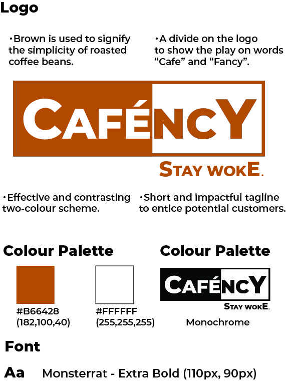
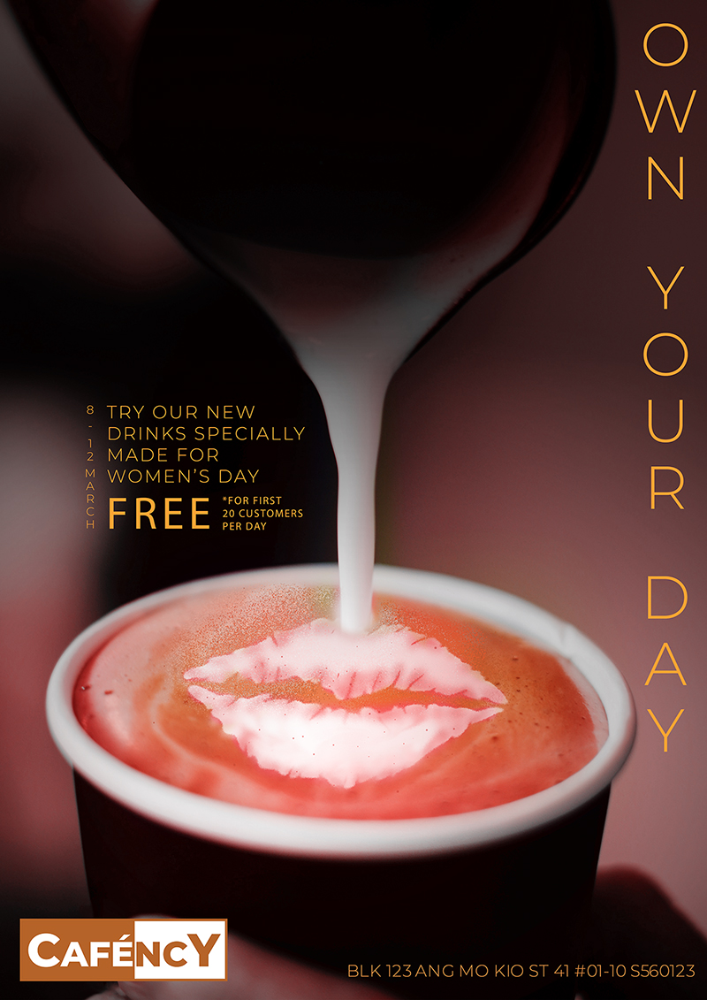
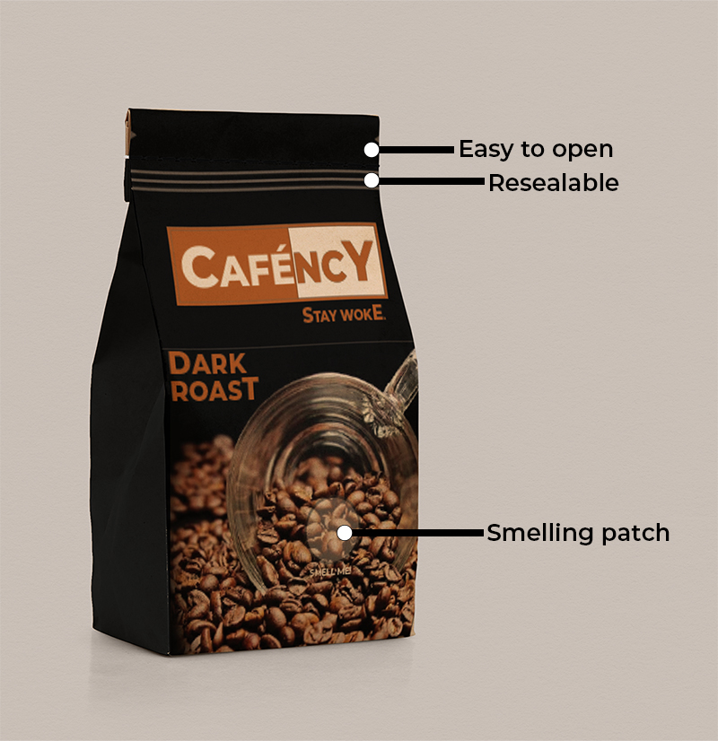

Café
The client was opening a new café soon, and wanted to brand their café as classy and elegant.
Graphic Design
Logo Design
Poster Design
As the opening date of the café is near International Women's Day, a poster advertising campaign was requested. A series of limited edition drinks is created in commeration of the event.
Ad Design
To expand its audience, the client decided to venture advertising on other platforms such as Facebook and Instagram. Facebook Carousel Ads were made for this purpose.
Coffee bean trials are placed to entice the viewer and lead their eyes to scroll to the next page. And according to a demographic survey, it was shown that the café has a higher female following. Hence, female models were used.
Packaging Design
The café decided to expand its business beyond its storefront by selling their in-house coffee beans. A packaging mockup was created for this purpose.
At the top of the packaging is small, triangle hole which makes it easy to tear and open. There is also a resealable feature which help preserve the quality and freshness of the beans by sealing the bag after use. A smelling patch was also placed strategically on the middle of the spilt coffee beans for customers to smell the beans in order for them to make a more informed choice on the coffee beans they are purchasing.